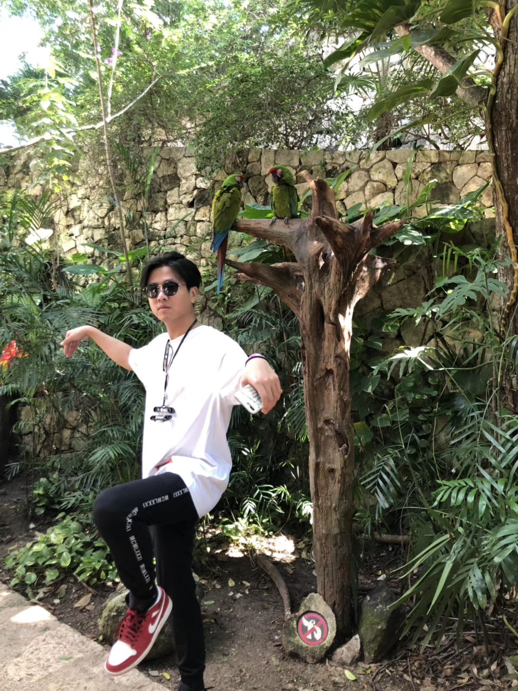

<style>
  .vl {
    border-left: 1px solid lightgray;
    height: 150px;
  }
</style>
<section
  style="
    display: flex;
    flex-direction: row;
    justify-content: center;
    align-items: center;
    gap: 5rem;
  "
>
  <div className="flex items-center justify-center grow">
    
  </div>
  <div class="vl"></div>
  <div className="flex items-center justify-center ">
    <ul>
      <li>Bachelor of Environmental Design, University of Manitoba</li>
      <li>Favourite Show is Breaking Bad + Better Call Saul</li>
      <li>Recently into Jazz HipHop Music</li>
      <li>Pet Lover, having one dog, used to have 3 cats, 2 chinchillas, 3 gunie pigs</li>
    </ul>
  </div>
</section>
